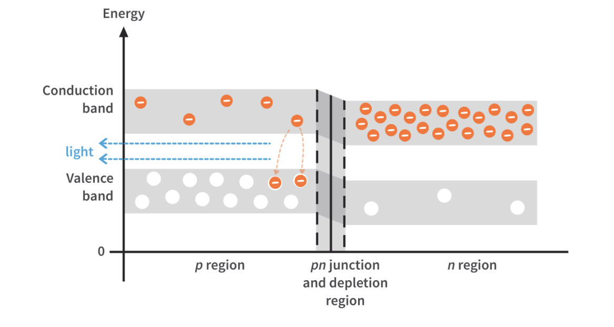
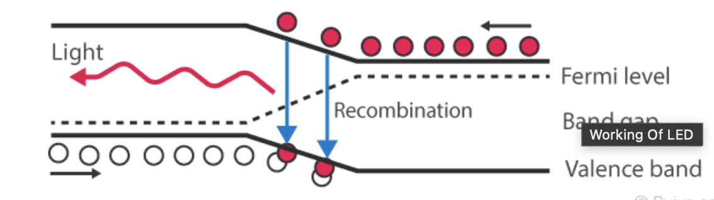
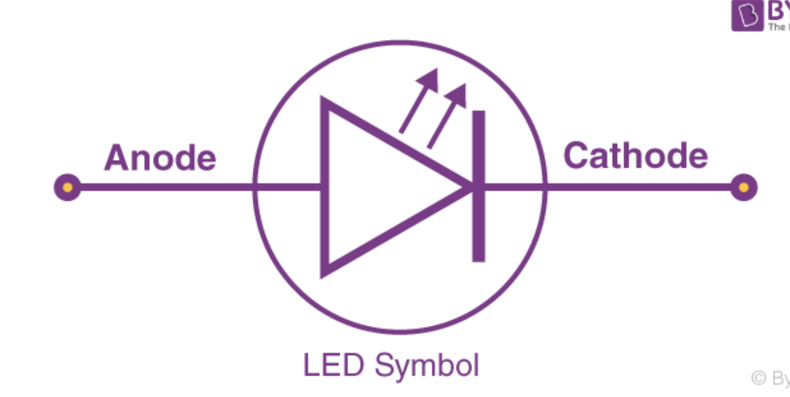
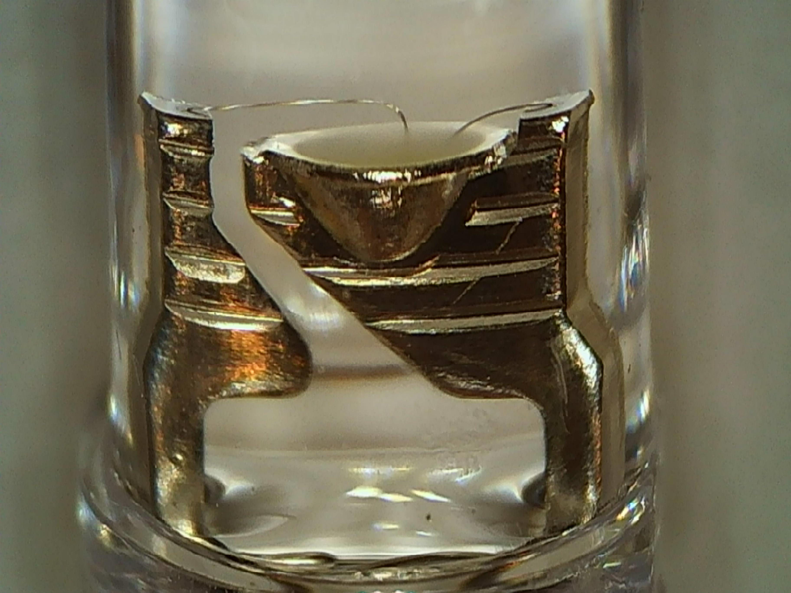
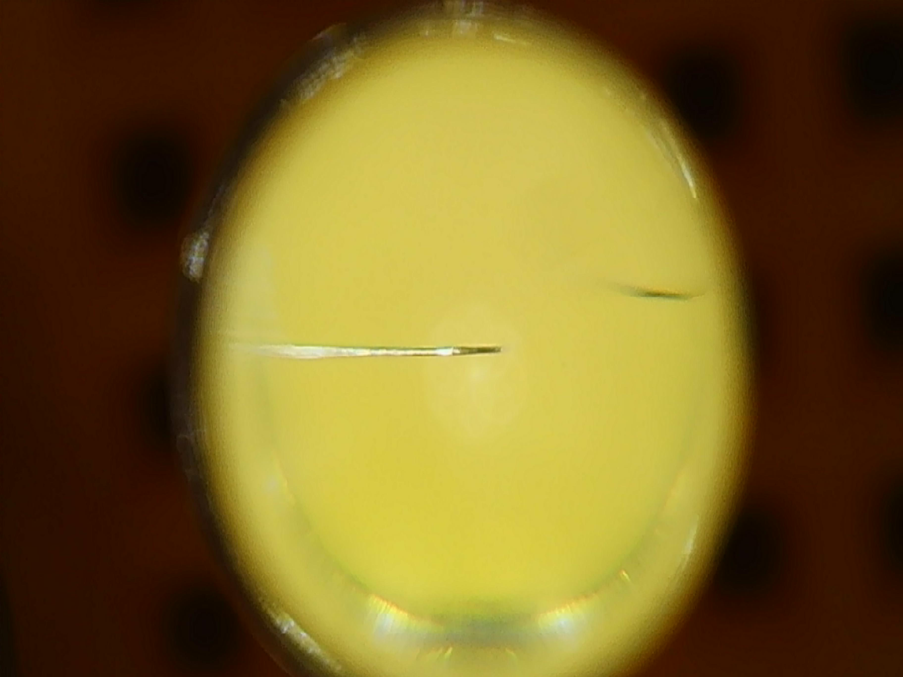

An LED is a light emitting diode. It has a p-type and an n-type doped semiconductor with a PN-junction. When this junction is forward-biased, the electrons combine with the holes on the other side and form photons. The energy level of these photons corresponds to the energy that is lost moving from the conduction band to the valence band. LEDs are made from compound semiconductors such as gallium arsenide, gallium phosphide, and other materials. Silicon diodes release their energy as heat, therefore silicon is not used in creating LEDs. The LED is forward biased when the P-region has a higher potential than the N-region.[^7] When an electron and an electron hole meet, they release some energy.[^7]


The cathode material of the LED holds the semiconductor, This is known as the Anvil. The die is placed in a reflective cavity and covered with an opaque material to diffuse the light. As the light is produced closer to the P side of the junction, this is thinner and placed near the top of the circuit.

Side View of an LED. You can see the two leads going into the opaque well where the semiconductor die is placed.

This is the top view. The domed top of the clear epoxy forms a lens that collimates the light from the diode. You can see at the bottom edge of the image is the bottom edge of the opaque well seen above.

LEDs can be modulated for use with optical communication networks. The current that an LED draws depends on the voltage that is applied to it.[^6] Different LEDs have differing brightness due to the different PN materials in their junctions.[^6] Different LEDs also have different forward voltages.[^6] LEDs are a polarized component.[^6] The I-V curve of an LED is similar to a diode, where the current increases logarithmically when the maximum forward voltage is exceeded by a little bit.[^6] You should avoid connecting LEDs in parallel as you will need double the voltage to allow them to draw the same current as a single series LED.[^6] Also if parallel LEDs are not identical, all of the current may pass through a single LED so you need balancing resistors for parallel arrangements.[^6]
P-N Junction
Photodiode - opposite effect
LED Bulbs
Photoelectric Smoke Detector - uses LEDs
Using an LED as a Light Detector
Forward Bias - uses a forward bias to release light
Reverse Bias
LED Materials based on Color
Compound Semiconductor
Constant Current Source - High-power LEDs are best used with constant current sources
Resistor LED Voltage Control
Resistor LED Driving Example
Shunt vs Series LED Driver
Magnetic levitation Circuit - uses an LED as the light source
Linear Voltage Regulator - you can use an LED to show when the voltage regulator is powered up
Silk Screen Placement Errors - You should clearly mark polarized components like LEDs on your PCB to prevent improper installations
SemiconductorLaserDiodes
HowDoesLED2019
WhatLEDDefinition
LightEmittingDiode
UltrahighcapacityWirelessCommunication
LEDDrivingControlling[^6]
UsingLEDsLight[^7]